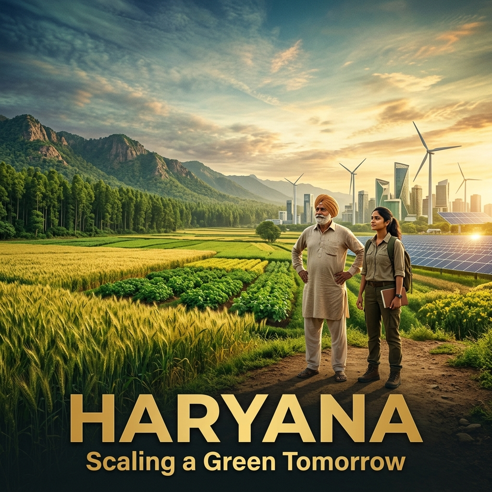

A ₹2,738-crore scalable initiative creating 400 modern crop clusters and covering 65,000 acres under micro-irrigation. This reduces heavy water depletion while scaling up crop yields.
A massive ecological restoration buffer along the Aravalli range designed to block desertification. Supported by local "Van Mitras" who earn livelihoods guarding native veteran trees.
Using ISRO satellite feeds, the Haryana Space Applications Centre maps crop health, estimates yields, and monitors residue burning patterns to ensure responsive water and air protection.